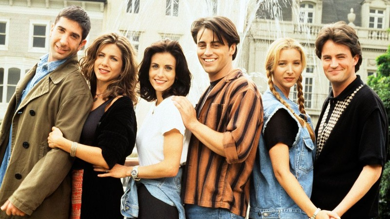

A ideia para a série foi concebida quando Crane e Kauffman começaram
a lembrar do momento em que eles tinham acabado a faculdade e
começaram a viver por si só, em Nova York; Kauffman acreditava
que eles estavam procurando o momento em que o futuro era "mais
um ponto de interrogação". Eles acharam esse conceito interessante,
pois acreditavam que "todo mundo sabe como é esse sentimento".
Depois que tornou-se evidente que a série foi um projeto que favoreceu
a NBC, Littlefield relatou que estava recebendo telefonemas de todos os
agentes da cidade, querendo o seu cliente como parte do seriado.
O diretor de elenco escolheu mil atores, que quando separados por candidatados
para cada papel, caia para 75 pessoas por personagem.
Tendo trabalhado com David Schwimmer no passado, os criadores da série
escreveram o personagem de Ross com o ator em mente. Os produtores queriam
que Courteney Cox interpretasse Rachel, porém, Cox recusou-se e pediu
para interpretar Monica. Quando Matt LeBlanc fez o teste para Joey, os
escritoes não gostaram muito, mas o aceitaram. Jennifer Aniston, Matthew Perry e Lisa Kudrow
foram escolhidos em seus testes.
